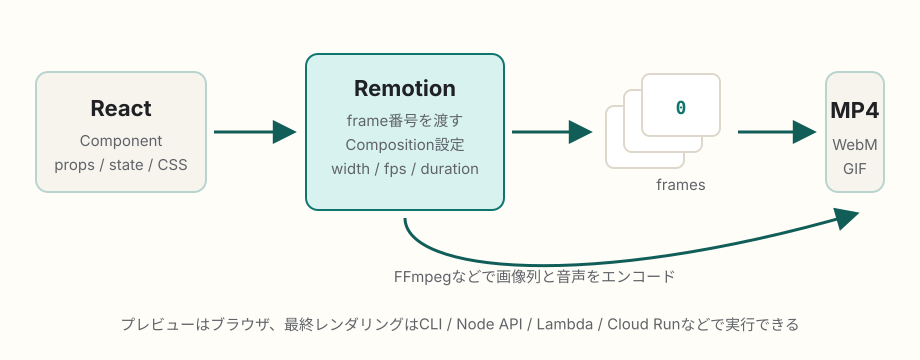

React / 動画生成
Remotionは動画生成にどんな仕組みを使っているのか
Remotionは、Reactコンポーネントを「時間ごとの画面」として実行し、各フレームを画像として描画してから、動画ファイルへエンコードする仕組みです。Reactで動画を直接書き出すというより、ブラウザの描画エンジンとエンコーダを組み合わせて、Reactの見た目を連番フレームへ変換します。
簡潔なQ&A
- Q. Reactで作られているRemotionは、動画生成にどんな仕組みを使っているの？
- A. Reactコンポーネントに現在のフレーム番号を渡し、その時点の画面をChromiumなどのブラウザで描画します。生成されたフレーム画像を、音声と合わせてFFmpegなどでMP4、WebM、GIFなどへエンコードします。
- Q. 普通のReactアプリとの一番大きな違いは？
- A. 通常のReactアプリはユーザー操作や状態変化に応じて画面を更新しますが、Remotionでは
frame = 0, 1, 2...のように時間をフレーム番号として固定し、同じ入力なら同じ1枚が描けるようにします。 - Q. ブラウザだけで完結するの？
- A. プレビューはブラウザで行えます。最終的な動画レンダリングはCLI、Node.js API、AWS Lambda、Google Cloud Run、クライアントサイドレンダリングなど複数の方法があり、用途に応じて実行場所を選びます。

基本モデル: 動画は「フレーム番号の関数」
Remotionの考え方はシンプルです。Reactコンポーネントに「今は何フレーム目か」を渡し、そのフレームで表示されるべきDOM、CSS、画像、動画、音声を決めます。公式ドキュメントでも、Remotionはフレーム番号と空のキャンバスを渡し、Reactで好きなものを描くという発想で説明されています。
たとえば30fpsの5秒動画なら、合計150フレームです。Remotionは0から149までのフレームを順番または並列に描画し、それぞれを1枚の静止画として扱います。アニメーションは、useCurrentFrame()で得たフレーム番号をもとに、位置、透明度、色、サイズなどを計算して作ります。
Compositionが動画の設計図になる
Remotionでは、動画として書き出せる単位を<Composition>で登録します。Compositionには、Reactコンポーネントだけでなく、幅、高さ、fps、総フレーム数といった動画メタデータを持たせます。
| 情報 | 役割 |
|---|---|
component |
各フレームで描画されるReactコンポーネント。 |
width / height |
出力動画の解像度。例: 1920x1080。 |
fps |
1秒あたりのフレーム数。時間計算の基準になる。 |
durationInFrames |
動画全体の長さをフレーム数で表す。 |
inputProps |
名前、商品情報、字幕データなど、動画を動的に変える入力。 |
レンダリング時に起きていること
ローカルCLIやサーバーサイドレンダリングでは、Remotionプロジェクトをブラウザで読める形にバンドルし、Headless Chromiumなどを起動して、各フレームを描画します。公式の@remotion/rendererには、Compositionを選ぶselectComposition()、動画や音声を生成するrenderMedia()、フレーム画像を作るrenderFrames()、画像列を動画にまとめるstitchFramesToVideo()などのAPIがあります。
最終的には、フレーム画像、音声、コーデック設定、ビットレート、CRFなどを使って動画へエンコードします。公式APIの説明にも、codec、audioCodec、videoBitrate、crf、imageFormatなど、FFmpegの考え方に近い設定が並びます。
処理の流れ
- Reactで動画用コンポーネントを書く。
<Composition>で解像度、fps、長さ、対象コンポーネントを登録する。- StudioやPlayerでブラウザ上プレビューする。
- レンダリング時にRemotionがプロジェクトをバンドルし、対象Compositionを選ぶ。
- Chromiumなどで各フレームを描画し、JPEGやPNGなどの画像として取り出す。
- 音声や動画素材を必要なタイミングに合わせる。
- FFmpegなどで画像列と音声をエンコードし、MP4などの成果物にする。
Reactらしさが効くところ
Remotionの強みは、動画編集のタイムラインをGUIで操作する代わりに、Reactのコンポーネント設計、props、条件分岐、配列のmap、CSS、外部APIデータをそのまま動画生成へ使える点です。たとえば、ユーザー名、売上データ、字幕、商品画像などをinputPropsとして渡せば、同じCompositionから大量のパーソナライズ動画を生成できます。
一方で、動画として安定して書き出すには、通常のWebアプリよりも「同じフレーム番号なら同じ見た目になる」ことが重要です。ランダム値、現在時刻、未完了の非同期読み込み、外部フォント、動画素材の読み込み遅延は、レンダリング結果のぶれや失敗につながるため、Remotionの待機APIや素材管理の作法に合わせて扱います。
レンダリング場所の選択肢
| 方法 | 向いている用途 | 特徴 |
|---|---|---|
| Remotion Studio / CLI | ローカル制作、検証、少量の書き出し。 | 手元で確認しながら作れる。CLIではnpx remotion renderで書き出せる。 |
| Node.js SSR API | 自前サーバーでの自動生成。 | @remotion/rendererを使い、アプリのバックエンド処理に組み込める。 |
| AWS Lambda | 大量生成、並列化、短時間のバースト処理。 | フレーム範囲を分散してレンダリングしやすい。S3などクラウド資源と組み合わせる。 |
| Cloud Run | コンテナ実行基盤でのレンダリング。 | Remotion公式ではCloud Run対応も用意されているが、2026年5月時点ではドキュメント上でalpha版と説明されている。 |
| Client-side rendering | ブラウザ内での書き出し体験。 | @remotion/web-rendererを使う選択肢。ブラウザ対応や性能制約を考慮する。 |
よくある誤解
Reactが動画コーデックを直接作っているわけではない
Reactはあくまで各時点の見た目を宣言するための層です。実際の描画にはブラウザエンジンが関わり、最終的な動画ファイル化にはエンコード処理が関わります。
リアルタイム再生と最終レンダリングは別物
StudioやPlayerで滑らかに見えることと、最終動画を指定コーデックで安定して書き出せることは同じではありません。最終レンダリングでは、全フレームの描画、素材の解決、音声の同期、エンコード品質が重要になります。
CSSアニメーション任せではなく、フレーム基準で考える
Remotionでは、動画の時間をフレーム番号で扱うのが基本です。CSSアニメーションも使えますが、再現性やフレーム単位の制御を重視するなら、useCurrentFrame()とinterpolate()などで値を計算するほうが理解しやすいです。
要点
- RemotionはReactコンポーネントをフレーム単位で描画し、画像列を作る。
- Compositionが、コンポーネント、解像度、fps、長さをまとめる動画の設計図になる。
- レンダリングではChromiumなどのブラウザ描画と、FFmpegなどのエンコード処理を組み合わせる。
- Reactのpropsやデータ取得を使えるため、大量の動的動画生成に向いている。
- 安定した書き出しには、フレーム番号に対して決定的な表示になるよう設計することが重要。